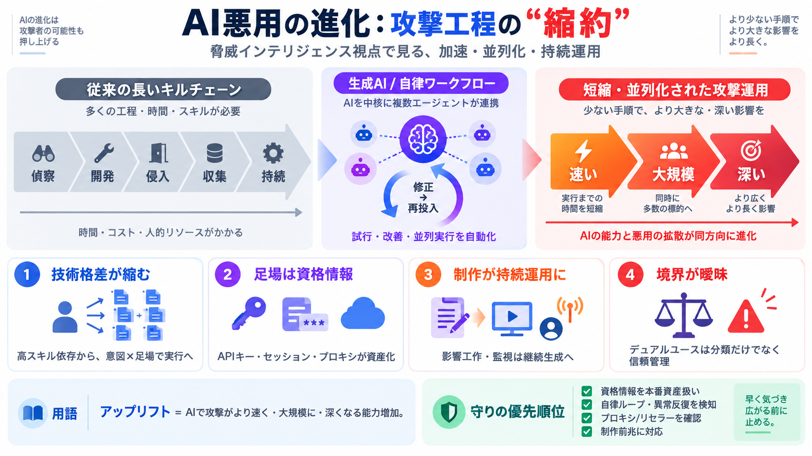

生成AI「Claude」は、悪用者の作戦運用を“加速”するだけでなく、サイバーのキルチェーンや分業型の情報操作を“縮約”している――脅威インテリジェンス視点で整理する。
本整理は、Claudeが悪用されようとした/悪用された事例を分野別にまとめたもので、GTG分類は「断定」ではなく「観測に基づく調査として読む」前提が必要だ。
AIは“速くする”だけでなく、偵察〜侵入〜収集〜持続までの工程を機械速度で並列化し、防御側が静的検知でコストを作りにくい状態を生む。
アップリフト（uplift）とは、AI導入で攻撃が「より速く・より大規模に・より深く」能力増加し、複数段階の効率化で拡大することを表す。
約2025年12月〜2026年8月の介入・無力化事例を、Claude（Haiku / Sonnet / Opus）と害の領域（サイバー、影響工作、監視、詐欺、通常兵器・生物等）で横断整理している。
Claudeは“質問への答え”に留まらず、マルチエージェント/自律ワークフローの中核として、修正・再デプロイや侵入〜収集〜販売の段階化を可能にする。
攻撃は攻撃者の“技術力”ではなく“意図”で区別されやすくなり、盗んだAPIキー等を足場に作業を並列化できるため、小規模プレイヤーでも多人数規模の実行が可能になる。
AIサプライチェーン（APIキー/セッショントークン/プロキシ/違法蒸留）が攻撃経路として確立し、「アクセスそのもの」が略奪品になる構造が論じられている。
影響工作・監視ではClaudeが編集デスク/分析官の代替になり、台本・ペルソナ・配信運用までを継続的に生成して、単発の扇動より“持続運用”に寄っていく。
生物・通常兵器は“善用/悪用”が判別しにくいデュアルユースで、意図を完全確定できない以上、分類器だけに依存できず、信頼管理が必要になる。
モデル拒否だけでなく、認証情報の扱い・プロキシ/リセラーのガバナンス・振る舞い検知・制作前兆への対応を強化することが重要だ。
AI能力が上がるほど悪用側の回避と並列化も進むため、技術・契約・運用・監査をまたいだ“早期遮断と継続更新”が必要になる。
No references found